A home office doesn't need a spare room to work.
A corner, a closet, a sliver of a landing, any of it can become a space that actually gets used, instead of a spot where a laptop sits unopened.
What makes the difference isn't square footage. It's a handful of deliberate choices.

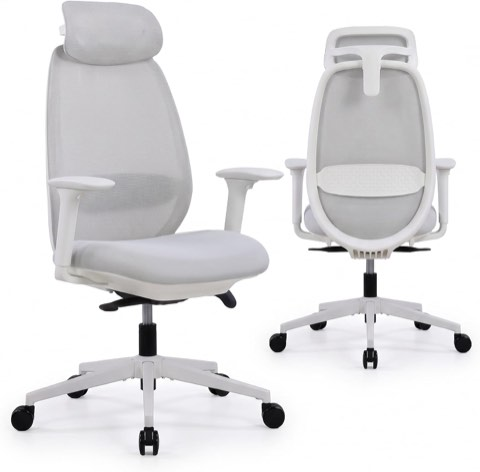
Arix Ergonomic Office Chair with 4D Armrests and Adjustable Lumbar Support
Shop on Amazon1. Keep the Whole Setup Flexible
Needs change. A desk that can't adapt becomes a problem eventually.
Furniture on casters moves easily when the layout needs to shift.
A standing desk converter adds a movement option without a full desk swap.
Modular shelving expands or shrinks as storage needs change.
Building in that flexibility now saves a full redo later.
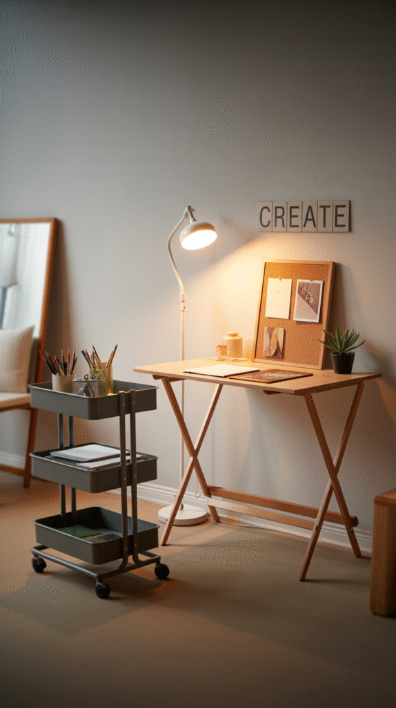
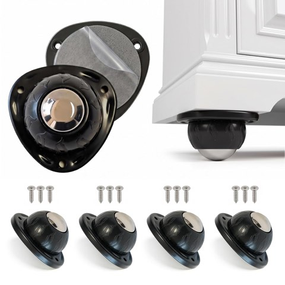
Heavy Duty Self-Adhesive Furniture Casters, 4 Pack, Stick-On Swivel Wheels
Shop on Amazon
2. Bring In a Scent
Smell is an underused tool in a home office.
A candle or diffuser with citrus or peppermint tends to sharpen focus.
Lavender works better at the end of the day, when the goal shifts from focus to winding down.
It's a small addition. It's also one of the easiest to change on a whim, depending on the day.
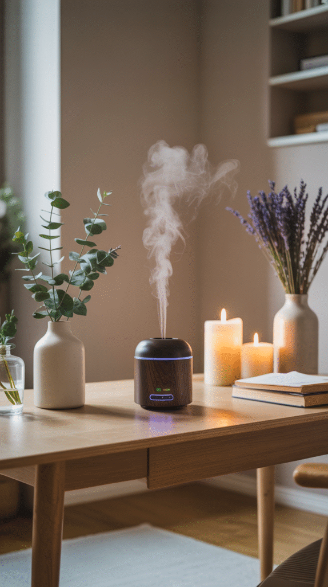
3. Let Tech Work for the Space, Not Against It
A tangle of cords undercuts even the best-looking desk.
Wireless chargers, a cable tray under the desk, a docking station for one-cable laptop hookup, small upgrades, but they add up fast.
A second monitor earns its keep fast for anyone doing real work at this desk daily.
None of it needs to look like a showroom. It just needs to stay out of the way.
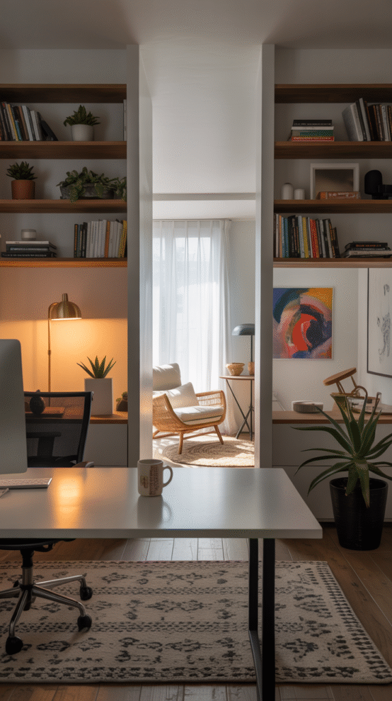
4. Zone It When One Space Does Double Duty
A lot of home offices aren't dedicated rooms. They share space with a guest bed, a craft table, a reading chair.
A rug under the desk area marks the boundary without needing a wall.
A bookshelf or folding screen does the same job, and adds privacy when a call comes up unexpectedly.
Even a change in lighting, a desk lamp versus the room's main light, signals where "work" starts and "everything else" ends.
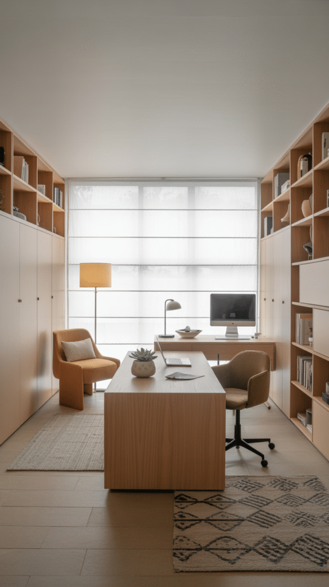
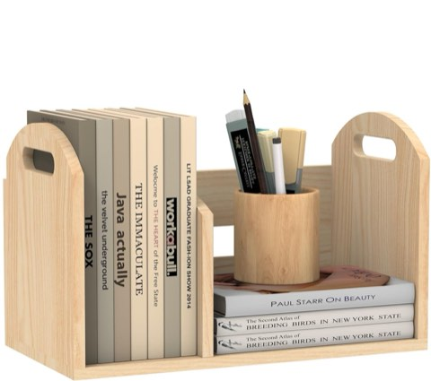
Wood Desktop Bookshelf, Upright Tabletop Book Shelf with Adjustable Divider
Shop on Amazon5. Add a Few Personal Touches
A sterile desk doesn't make anyone want to sit at it.
A framed photo, a favorite mug, a small plant, these aren't distractions. They're what makes a space feel like it belongs to someone.
The key word is a few. Enough to feel personal, not so much it competes with the work itself.
A single piece of art on the wall often does more than a cluttered gallery wall ever could.
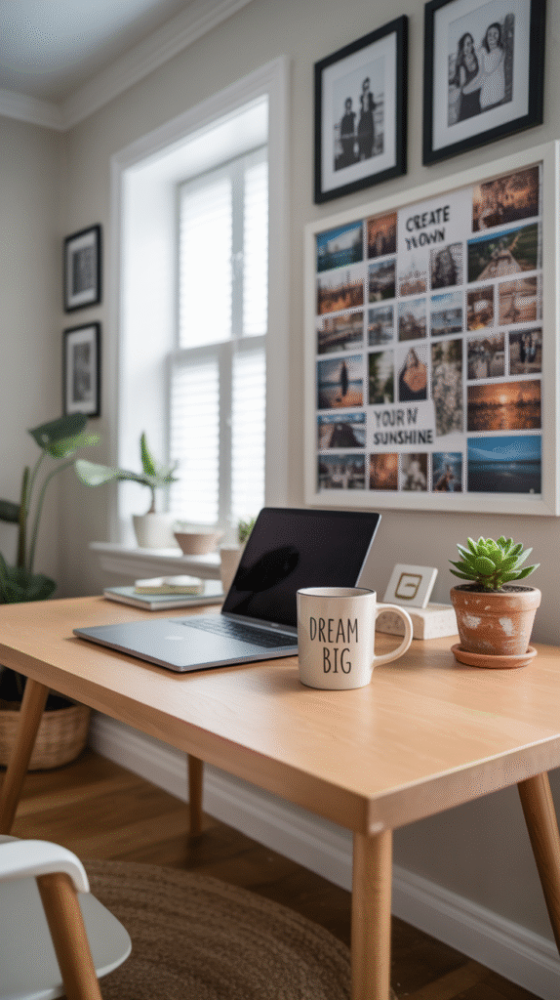
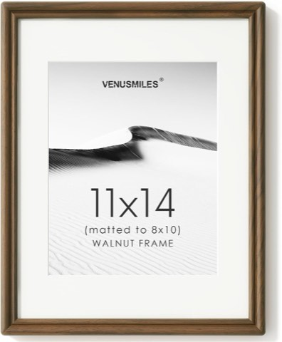
11 x 14 Picture Frame, Natural Solid Walnut Wood, USA-Sourced, with HD Glass
Shop on Amazon6. Build In Real Storage
Clutter creeps in fast. A desk piled with papers and cables doesn't inspire focus.
Floating shelves keep frequently used items close without eating floor space.
A few labeled bins corral the smaller stuff, cables, chargers, odds and ends.
A rolling cart adds storage that can tuck away when it's not needed.
None of this has to be expensive. It just has to have a home for everything.
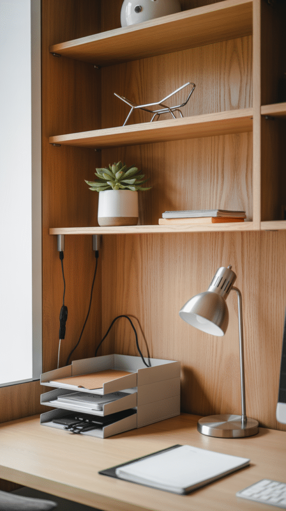
7. Choose Colors That Actually Help
Wall color isn't just decoration. It shapes mood more than people expect.
Soft blues and greens tend to calm a space down. Good for long focus sessions.
A warm yellow or coral accent can lift energy instead, for anyone who needs a spark rather than calm.
Neutral tones with one accent color split the difference, grounded, but not flat.
There's no single right palette. The right one matches how the space needs to feel, not how a showroom looks.
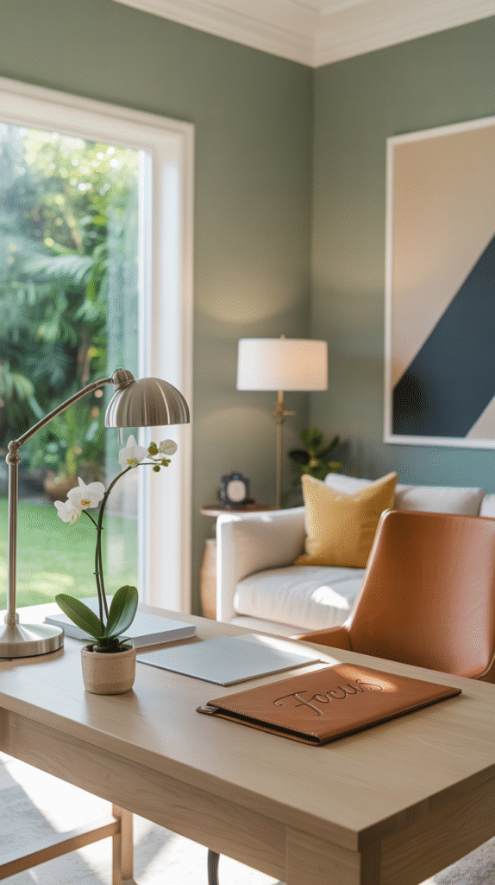
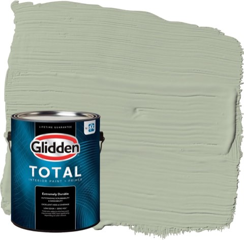
Glidden Total Interior Wall Paint and Primer, Light Sage Green, Semi-Gloss
Shop on Amazon8. Let Real Light In
Natural light does more than look nice. It keeps energy up and eyes less strained throughout the day.
A desk facing a window is the easiest fix, when a window is available at all.
No window nearby? A daylight-mimicking lamp gets close. Warm, dim overhead lighting works against focus, not for it.
Light this one detail right and the whole space feels more alive.
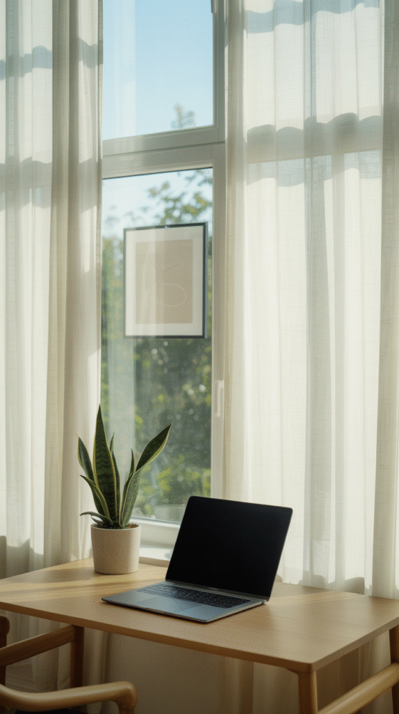
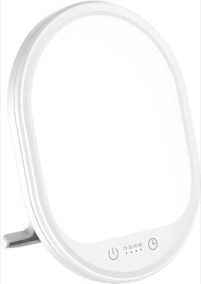
UV-Free 10000 Lux Daylight Lamp, Touch Control, 3 Brightness Levels, Timer
Shop on Amazon
9. Get a Chair Worth Sitting In
Comfort isn't optional here. It's the difference between a productive afternoon and a sore back by 2 p.m.
An ergonomic chair supports the lower back properly. Adjustable height and armrests matter more than looks ever will.
A cheap desk chair might save money upfront. It costs more in posture problems later.
This is one category where it's worth spending a little more.
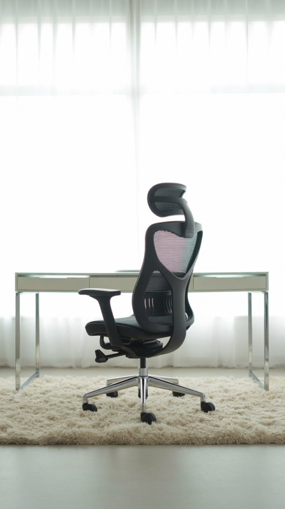
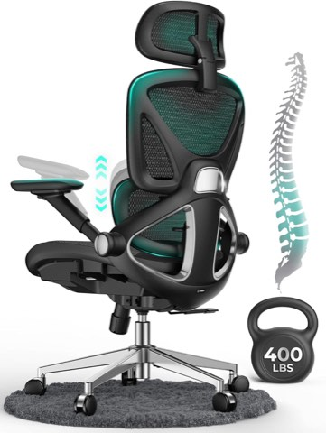
CAPOT Ergonomic Mesh Office Chair, High Back, Adjustable Lumbar, 400 lb
Shop on Amazon10. Pick One Spot and Commit to It
A kitchen counter isn't an office. Neither is a couch cushion.
Both work in a pinch. Neither trains the brain to focus the way a real spot does.
A dedicated spot, even a small one, sends a signal. Sitting there means it's time to work.
Leaving it means the day is done.
That mental switch is the whole point. A closet with the doors removed, a nook under the stairs, a corner of the bedroom with a folding screen behind it, any of these qualify, as long as the spot stays consistent.
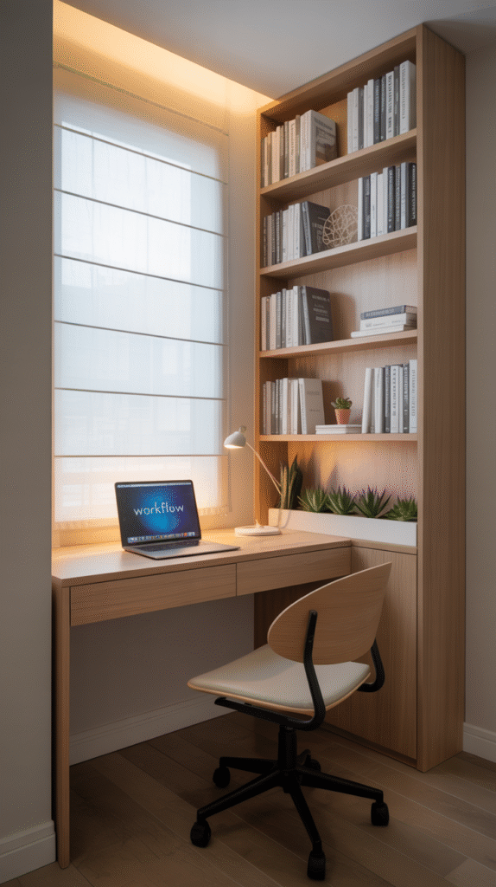
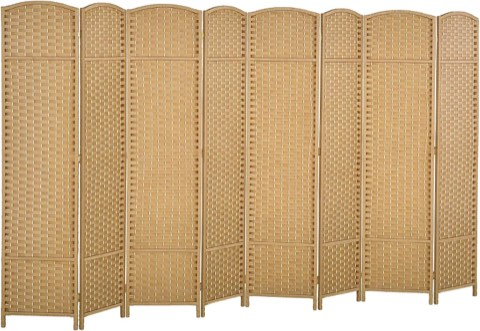
HOMCOM 8 Panel Folding Room Divider and Privacy Screen, 5.6 Ft Tall, Natural Wood
Shop on Amazon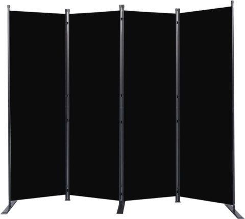
4 Panel Folding Room Divider and Privacy Screen, 88 Inch Wide, 6 Ft Tall
Shop on AmazonFinal Thoughts
None of these ten changes require a full room or a big budget.
A comfortable chair, real light, a dedicated spot, even just those three go a long way on their own.
Add the rest in gradually. A home office built up over a few weekends tends to fit better than one assembled in a single rushed trip to a furniture store.